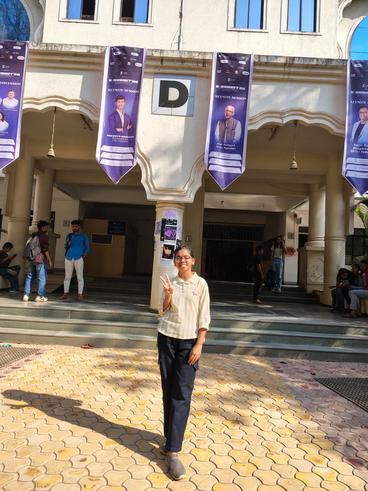
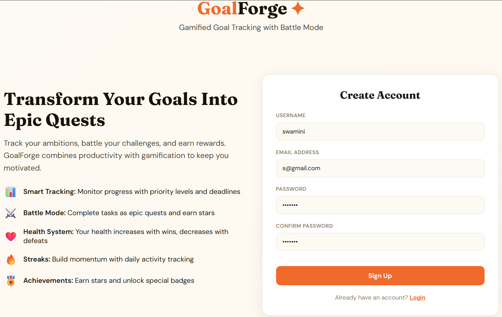
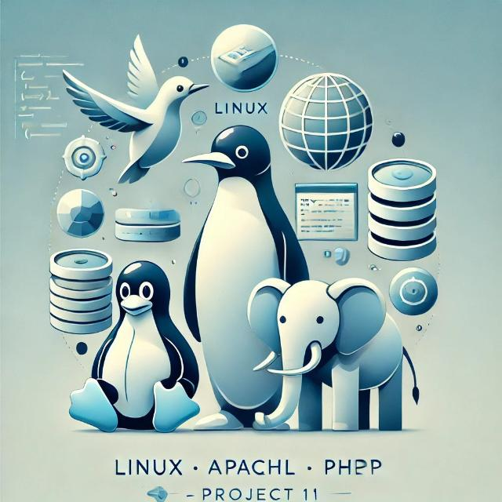
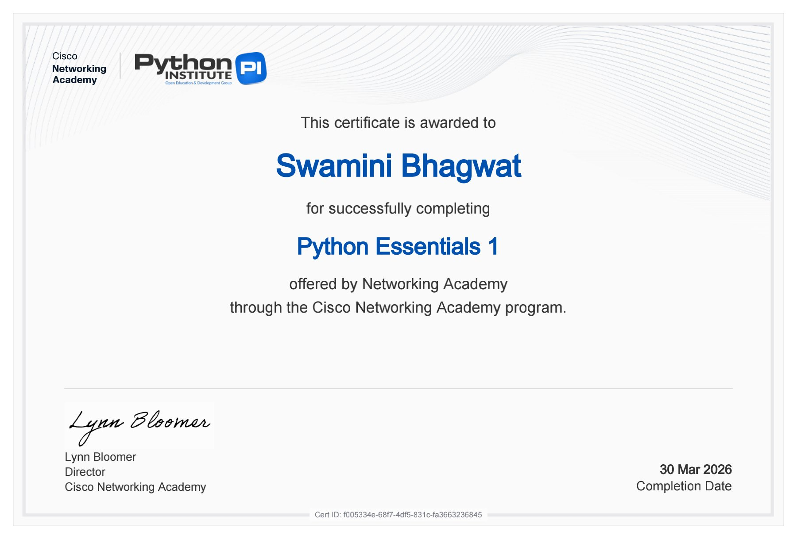
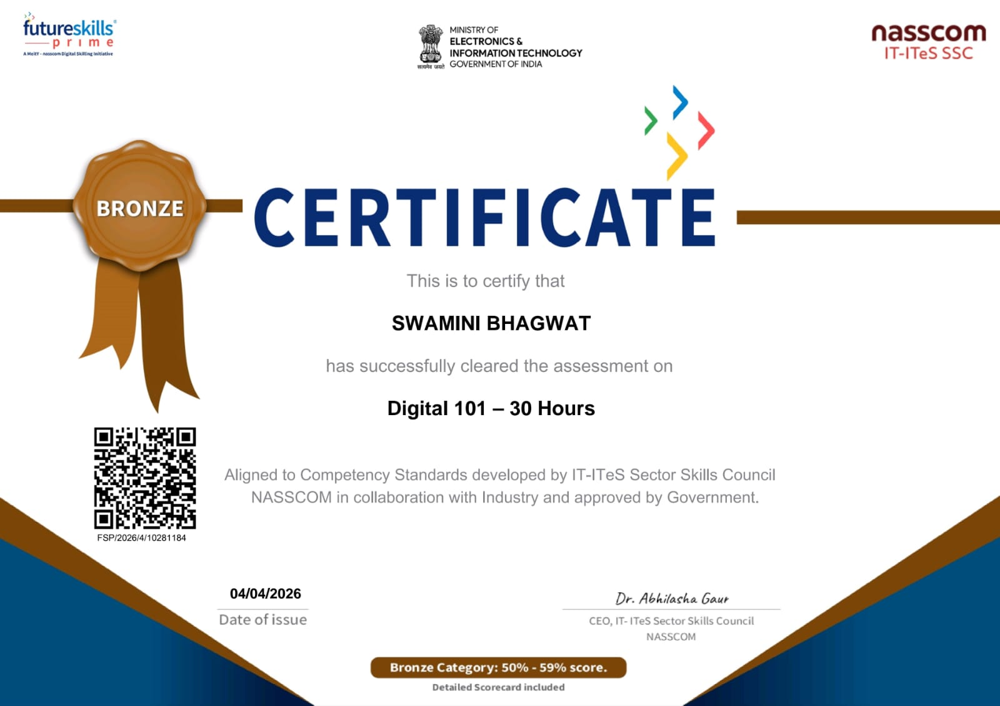
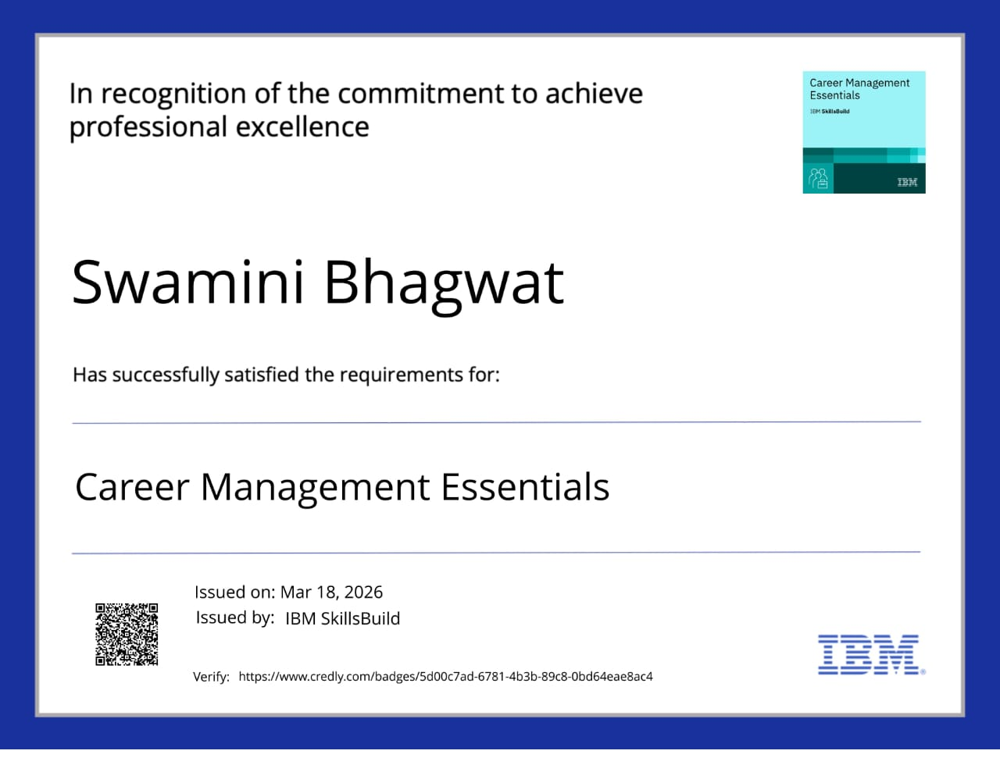
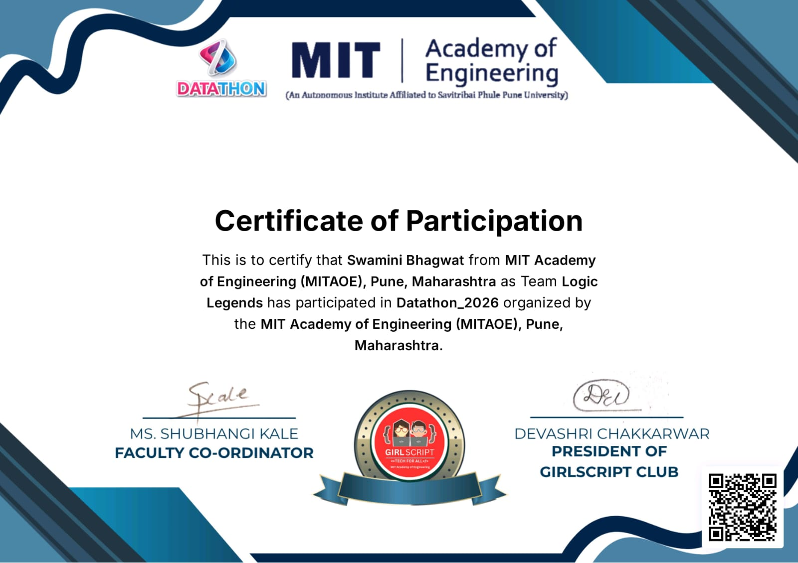
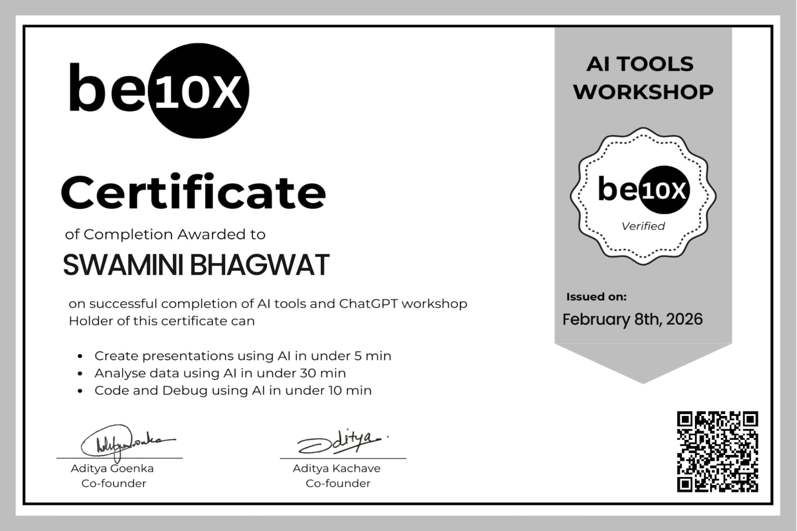
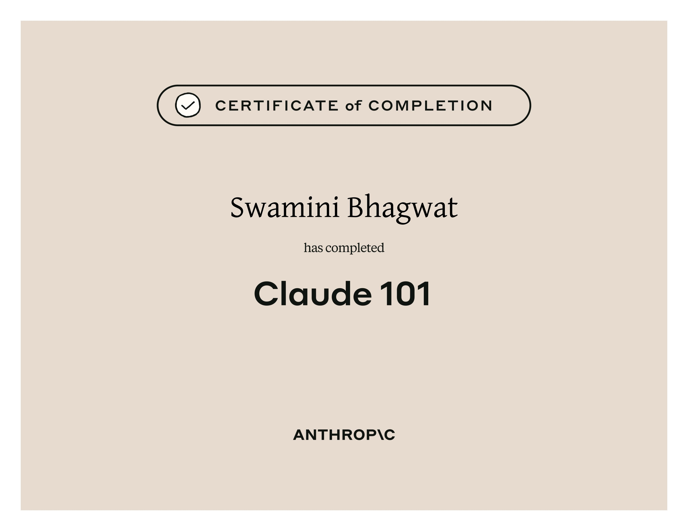
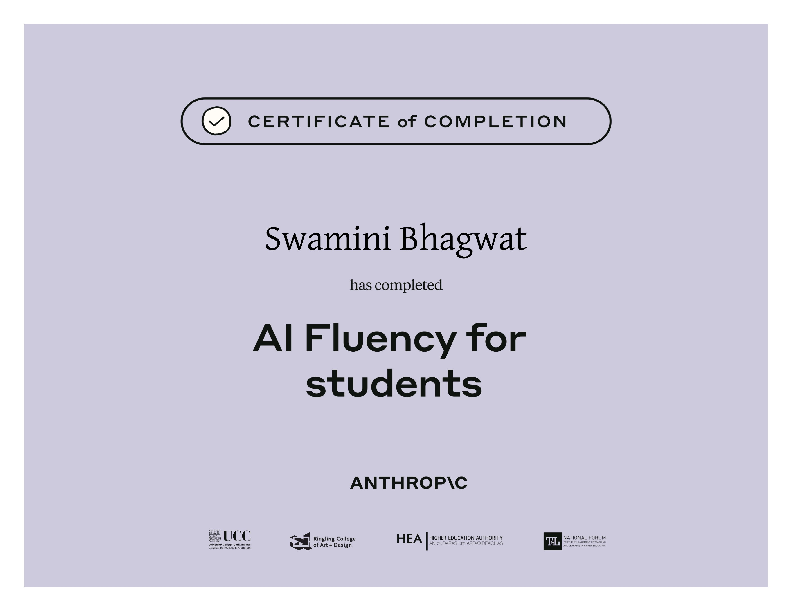

Hello, I'm Swamini
Bhagwat
Computer Engineering Student
Welcome to my page
About Me
I am a first-year Computer Engineering student passionate about programming and building real-world solutions.I am an aspiring Software Engineer with a strong interest in programming, problem-solving, and technology. I am currently learning Java and Python, along with Data Structures and Algorithms, to build a solid foundation in computer science. I enjoy exploring new technologies such as Artificial Intelligence and Web Development, and I am passionate about improving my skills every day. My goal is to build impactful projects and grow into a skilled and responsible engineer.
Personal Info
Name: Swamini Pandurang Bhagwat
DOB: 14 February 2007 (Age: 19)
Degree: B.Tech [Computer Engineering (Software)]
Contact
Email: swaminibhagwat1@gmail.com
Phone: +91 9699631483
Location: Washim / Pune, India
Education
Bachelor of Engineering
MIT Academy of Engineering, Alandi, Pune
Higher Secondary School (HSC)
Shri Bhiruji Maske Patil Mahavidyalay Wai, Washim
Secondary School (SSC)
Sanskar Sadhana Vidya Mandir ,Ansing Washim
Academic Performance
| 10th Board | 95.20% |
| 12th Board | 86.17% |
| MHT-CET | 96.22% |
| JEE Mains | 92.66% |
Technical Skills
| Python | 78% |
| Linux Basics | 88% |
| HTML | 90% |
| Java | 40% |
| CSS | 30% |
Soft Skills
Communication, Problem Solving, Leadership, Team Collaboration
Projects
Dathathon Project
Idea: Goal Tracking Website
Intresting Part:Gamified version
Key Features:Goal creation and tracking system
User-friendly dashboard
Focus on productivity and progress monitoring

Design Thinking Project
Topic: Hospital Appointment Booking Website
Idea: Designed and developed a web-based application for booking hospital appointments. This system allows users to select doctors, book appointments, and manage schedules efficiently.
Key Features: User-friendly interface for easy appointment booking
Doctor selection and time slot management
Improved accessibility for patients
Linux Account Management
Key Features: Automated student account creation
Storage of student details
Practical use of Linux commands

Roboticss Work
This project is a Voice Controlled Robot that can be operated using voice commands through a mobile application. The robot receives commands via Bluetooth and performs actions like moving forward, backward, left, and right.
Technologies Used Arduino, Bluetooth Module (HC-05), DC Motors, Motor Driver (L298N), Android App, C/C++ Programming
Key Features:
• Controlled using voice commands
• Wireless communication via Bluetooth
• Real-time movement response
• User-friendly interface
Achievements

Cisco Python Essentials 1
Cisco Python Essentials 2

NASSCOM

Career Magagement Essential

Datathon Participation

Be 10X Workshop

Claude 101

AI Fluency
Future Goals
My goal is to pursue a career in AI and Software to develop Software Applictions for the Technical sector.
"Highly motivated and technically sound." — Academic Peer